<!DOCTYPE html>
<html lang="en">
  <head>
    <meta charset="utf-8" />
    <meta name="viewport" content="width=device-width, initial-scale=1.0, maximum-scale=1.0, user-scalable=no" />

    <title>reveal-md</title>
    <link rel="shortcut icon" href="./favicon.ico" />
    <link rel="stylesheet" href="./dist/reset.css" />
    <link rel="stylesheet" href="./dist/reveal.css" />
    <link rel="stylesheet" href="./dist/theme/black.css" id="theme" />
    <link rel="stylesheet" href="./css/highlight/base16/zenburn.css" />


  </head>
  <body>
    <div class="reveal">
      <div class="slides"><section  data-markdown><script type="text/template"># SQS
<div style="display: flex; justify-content: space-around;margin-top: -20px;">
  
</div>
</script></section><section ><section data-markdown><script type="text/template">


## SQSの型</script></section><section data-markdown><script type="text/template">

### メッセージ型
<div style="font-size: 0.8em;">
    <p>
        メッセージ一つ1つが単独で処理することができる
    </p>
</div>

<div style="display: flex; justify-content: space-around;margin-top: -20px;">
  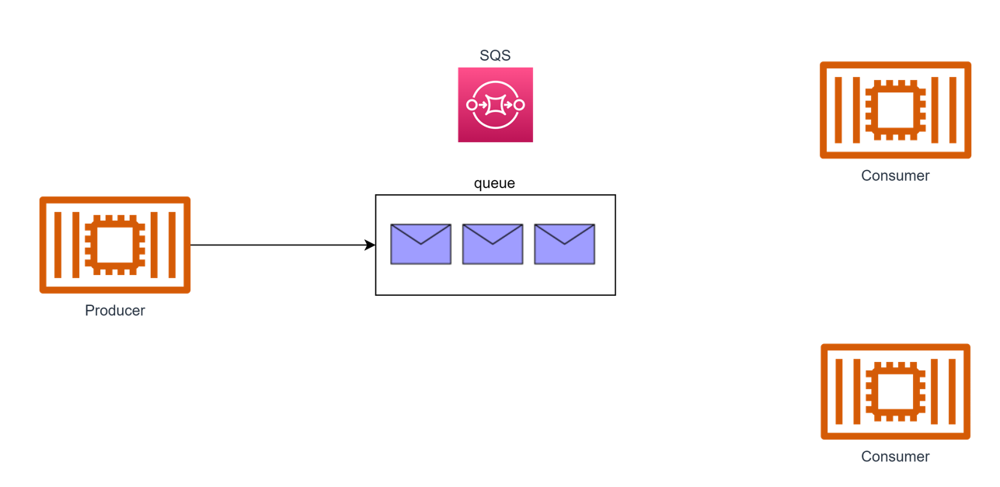
</div>
</script></section><section data-markdown><script type="text/template">

### P2P
<div style="font-size: 0.8em;">
    <p>
        1つのメッセージに対して、受信者が1つになる
    </p>
</div>

<div style="display: flex; justify-content: space-around;margin-top: -20px;">
  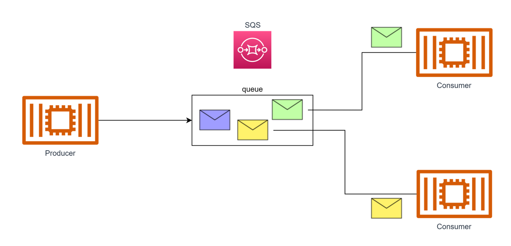
</div>

</script></section><section data-markdown><script type="text/template">
### Pull型
<div style="font-size: 0.8em;">
    <p>
        データは一度キューに格納される<br>
        データの取得はconsumerが能動的に行う
    </p>
</div>

<div style="display: flex; justify-content: space-around;margin-top: -20px;">
  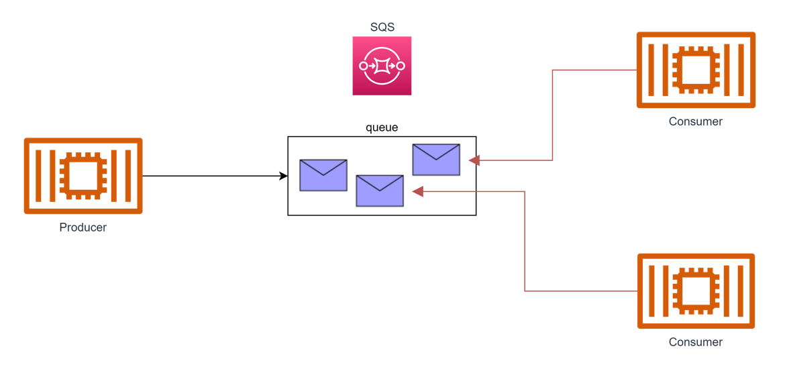
</div>

</script></section><section data-markdown><script type="text/template">### まとめ
<div style="font-size: 0.8em;">
    <p>
        独立した一つ一つのメッセージデータを扱い、<br>
        1つのデータは1つのconsumeが取得するP2P型であり、<br>
        consumerが能動的にデータを取得するpull型のサービス
    </p>
</div>

<div style="display: flex; justify-content: space-around;margin-top: -20px;">
  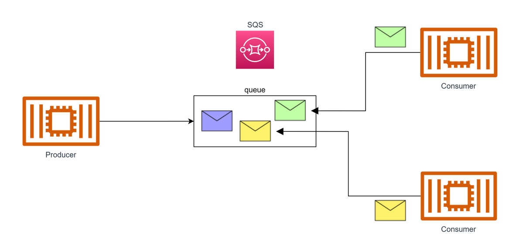
</div>


</script></section></section><section ><section data-markdown><script type="text/template">## キューの種類</script></section><section data-markdown><script type="text/template">### standardキュー
<div style="font-size: 0.8em;">
    <p>
        ベストエフォートの順序で処理されるキュー<br>
        配信についてもat least onceであり、重複する可能性が残る<br>
        その分、スループットは無制限になる
    </p>
</div>

<div style="display: flex; justify-content: space-around;margin-top: -20px;">
  
</div>
</script></section><section data-markdown><script type="text/template">### fifoキュー

<div style="font-size: 0.6em;">
    <p>
        配信順序を受信順序と厳密に一致させるキュー<br>
        順序はキュー全体で管理されるのではなく、メッセージグループID内で管理される<br>
        配信についてもメッセージ重複IDを利用した重複排除の仕組みが組み込まれている
    </p>
</div>

<div style="display: flex; justify-content: space-around;margin-top: -20px;">
  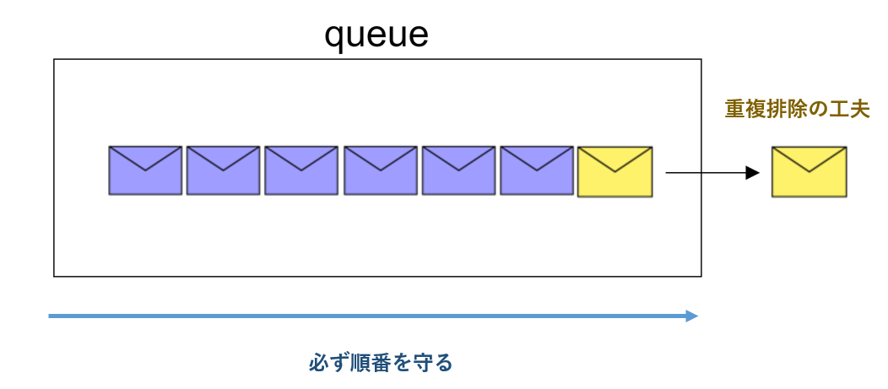
</div>


</script></section></section><section ><section data-markdown><script type="text/template">## 基本機能(standardキュー)</script></section><section data-markdown><script type="text/template">### ポーリング
<div style="font-size: 0.6em;">
    <p>
        consumerがSQSに対してメッセージを受信しにいく処理<br>
        ショートポーリング:メッセージがあれば返却、なければないと即時に返信<br>
        ロングポーリング:メッセージがあれば返却、なければ指定時間待機してから返信
    </p>
</div>

<div style="display: flex; justify-content: space-around;margin-top: -20px;">
  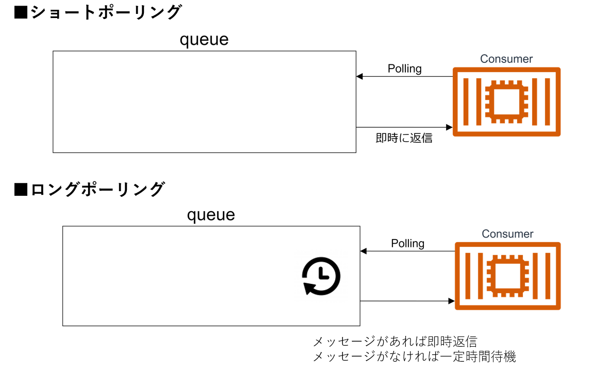
</div>
</script></section><section data-markdown><script type="text/template">### メッセージの削除（受信ハンドル）
<div style="font-size: 0.6em;">
    <p>
        SQSでは、処理を完了時にキューのメッセージをconsumerが削除する<br>
        consumerがメッセージを受信した際に、SQSからから受信ハンドルが配信される<br>
        SQSは、メッセージを受信し処理完了時に受信ハンドルを指定して削除を実行する
    </p>
</div>

<div style="display: flex; justify-content: space-around;margin-top: -20px;">
  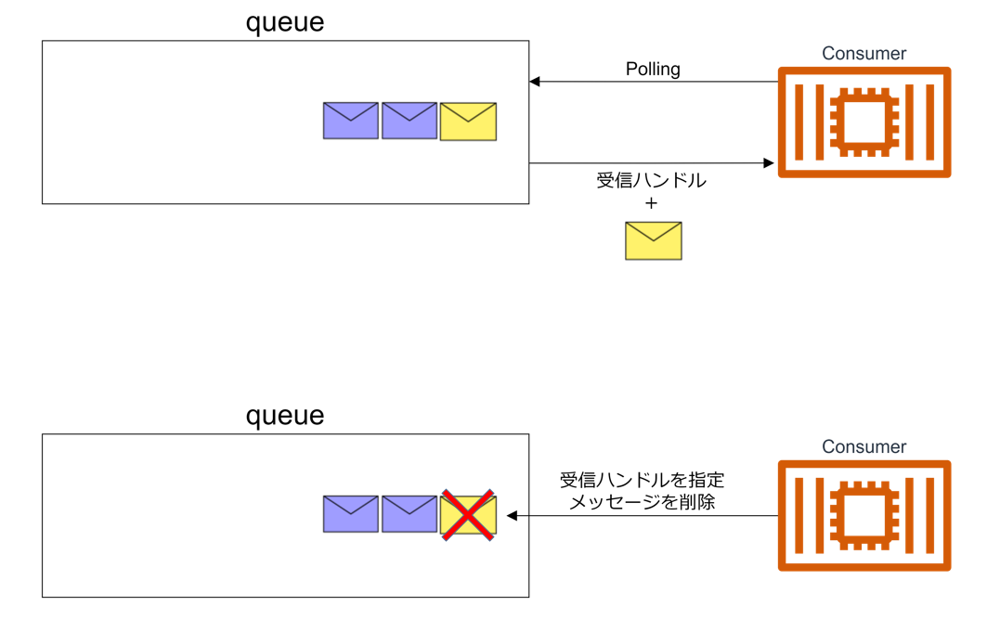
</div>


</script></section><section data-markdown><script type="text/template">### 可視性タイムアウト
<div style="font-size: 0.55em;">
    <p>
        consumer-Xが受信したメッセージを別consumerが認識しなくなる時間<br>
        この時間はタイムアウトの時間などを鑑みて決定する必要がある<br>
        可視性タイムアウト経過後、別のconsumerに配信されると受信ハンドルが新規発行され<br>
        consumer-Xが受け取った古い受信ハンドルでは削除できなくなる
    </p>
</div>

<div style="display: flex; justify-content: space-around;margin-top: -20px;">
  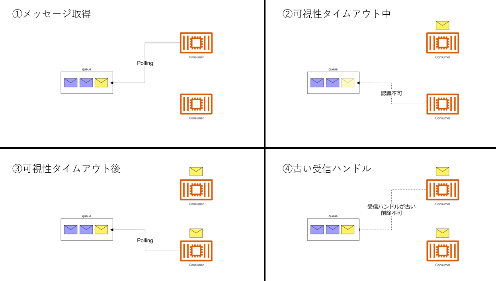
</div>
</script></section><section data-markdown><script type="text/template">### 遅延キューとメッセージタイマー
<div style="font-size: 0.8em;">
    <p>
        メッセージがキューに入ってから処理されるまでの遅延時間<br>
        遅延キューを利用すればキュー単位で、<br>
        メッセージタイマーを利用すればメッセージ単位で適用される
    </p>
</div>

<div style="display: flex; justify-content: space-around;margin-top: -20px;">
  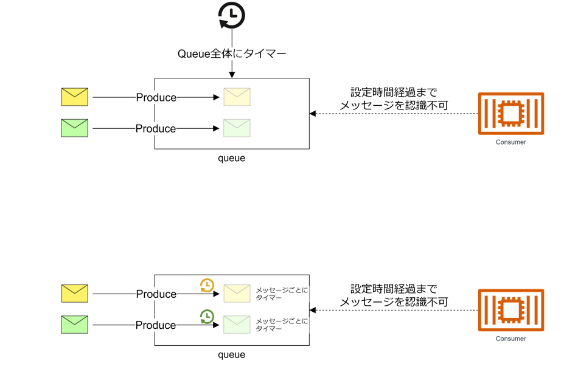
</div>
</script></section><section data-markdown><script type="text/template">### DLT
<div style="font-size: 0.8em;">
    <p>
        メッセージが配信されて、処理が失敗した場合に再配信される<br>
        事前設定した所定の回数再配信された場合、<br>
        DLQ(Dead Letter Queue)として設定した別キューに配信される
    </p>
</div>

<div style="display: flex; justify-content: space-around;margin-top: -20px;">
  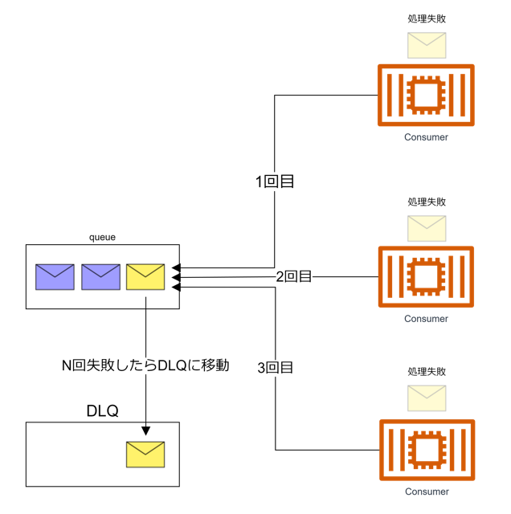
</div>


</script></section></section><section ><section data-markdown><script type="text/template">## FIFOキュー</script></section><section data-markdown><script type="text/template">### メッセージグループID
<div style="font-size: 0.7em;">
    <p>
        メッセージ送信時に指定する必須のID<br>
        メッセージはこのグループIDごとに管理され、ID内で順番が担保される<br>
        kafkaのpartitionに対応するが、事前に数を指定する必要性はない
    </p>
</div>

<div style="display: flex; justify-content: space-around;margin-top: -20px;">
  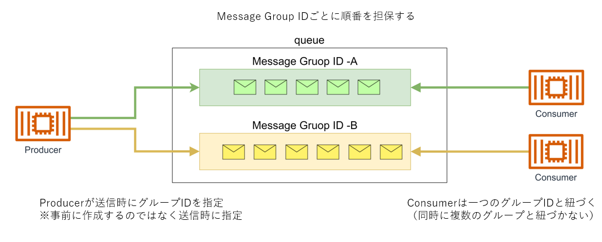
</div>
</script></section><section data-markdown><script type="text/template">### メッセージ重複ID
<div style="font-size: 0.8em;">
    <p>
        メッセージ送信時に指定するID<br>
        メッセージを配信する際に重複IDを確認し<br>
        5分間の間は同じ重複IDのメッセージを配信しなくなる
    </p>
</div>

<div style="display: flex; justify-content: space-around;margin-top: -20px;">
  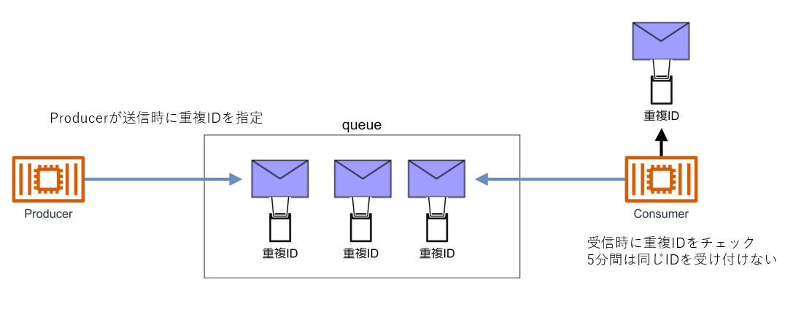
</div>
</script></section></section></div>
    </div>

    <script src="./dist/reveal.js"></script>

    <script src="./plugin/markdown/markdown.js"></script>
    <script src="./plugin/highlight/highlight.js"></script>
    <script src="./plugin/zoom/zoom.js"></script>
    <script src="./plugin/notes/notes.js"></script>
    <script src="./plugin/math/math.js"></script>
    <script>
      function extend() {
        var target = {};
        for (var i = 0; i < arguments.length; i++) {
          var source = arguments[i];
          for (var key in source) {
            if (source.hasOwnProperty(key)) {
              target[key] = source[key];
            }
          }
        }
        return target;
      }

      // default options to init reveal.js
      var defaultOptions = {
        controls: true,
        progress: true,
        history: true,
        center: true,
        transition: 'default', // none/fade/slide/convex/concave/zoom
        slideNumber: true,
        plugins: [
          RevealMarkdown,
          RevealHighlight,
          RevealZoom,
          RevealNotes,
          RevealMath
        ]
      };

      // options from URL query string
      var queryOptions = Reveal().getQueryHash() || {};

      var options = extend(defaultOptions, {}, queryOptions);
    </script>


    <script>
      Reveal.initialize(options);
    </script>
  </body>
</html>
